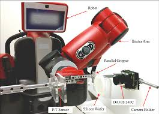
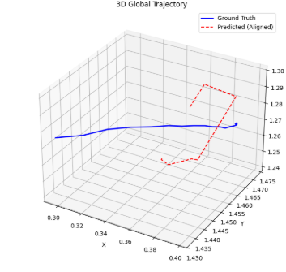
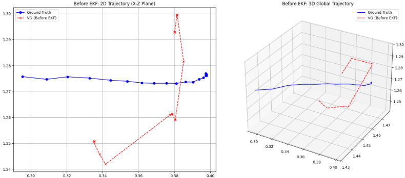
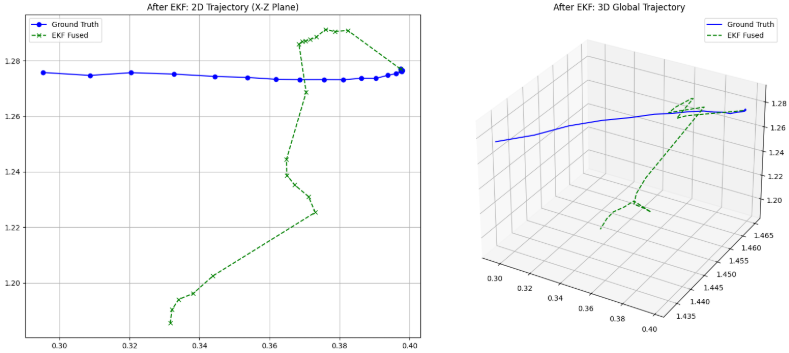

Event-based Visual Odometry (Event VO) is a paradigm that leverages asynchronous event cameras to estimate motion. Unlike traditional frame-based cameras, event cameras output brightness changes at pixel-level with microsecond resolution.
Key Features
High temporal resolution (microseconds)
Low latency and no motion blur
High dynamic range
Event Generation Model
Event cameras respond to changes in logarithmic brightness rather than absolute intensity. An event is triggered when the change in log intensity exceeds a predefined threshold. [503, 541, 542]
Rate of signal change: d/dt (log I(u,v,t)) >= C
Where I(u,v,t) is the image intensity at pixel (u,v) and time t, and C is the contrast threshold. [504, 544]
The polarity of the event is defined as: [505, 545]
p = +1 if d/dt (log I) >= C, -1 if d/dt (log I) <= -C
Thus, each event is represented as e = (u, v, t, p). [505, 547, 548] This representation makes event cameras invariant to absolute illumination and highly responsive to motion. [505, 549]
Sensor Used: Event VO commonly uses Dynamic Vision Sensors (DVS) or DAVIS cameras.
Limitations
Requires motion to generate events
Sparse data in static environments
Challenging outdoors due to noise and illumination variation
Works better indoors due to controlled lighting
2. Neuromorphic Sensor: DAVIS 240C
The DAVIS 240C sensor combines a standard frame-based camera with an event-based sensor.

Figure 1: DAVIS 240C Sensor
Key Characteristics
Resolution: (240 \times 180)
Outputs both frames and events
High temporal resolution (events)
APS grayscale frames available
3. UZH DAVIS 240C Dataset
The DAVIS 240C dataset from UZH provides synchronized multi-modal data for visual-inertial odometry.
The ground truth is represented as: (\text{Pose} = (t_x, t_y, t_z, q_x, q_y, q_z, q_w)). This dataset enables both Event VO and Event-based Visual-Inertial Odometry (VIO).
Figure 3: 2D Trajectory Comparison (Estimated vs Ground Truth)

Figure 4: 3D Trajectory Comparison (Estimated vs Ground Truth)
Observations
More stable motion estimation compared to feature-based methods
Sensitive to initialization and noise
10. Experiment 7: Direct Event-based Visual-Inertial Odometry
This experiment integrates IMU data with direct event VO for improved robustness.
Pipeline
Read IMU data (angular velocity, acceleration)
Integrate IMU to obtain motion prior
Generate time surface images
Use IMU prior to initialize pose
Minimize photometric error with IMU regularization: (E = E_{\text{photometric}} + \lambda E_{\text{IMU}})
Optimize pose ((R, t))
Compute RRE and RTE
Visualization Results

Figure 5: Trajectory before EKF Fusion

Figure 6: Trajectory after EKF Fusion (Direct Event VIO)
Observations
Reduced drift compared to pure VO
Improved stability in translation estimation
Conclusion
Event-based Visual Odometry demonstrates strong performance in high-speed and high dynamic range scenarios. While feature-based methods suffer from sparse correspondences, increasing temporal windows improves robustness. Direct methods and sensor fusion (VIO) further enhance accuracy. However, challenges remain in translation estimation due to limited epipolar constraints and noise sensitivity.